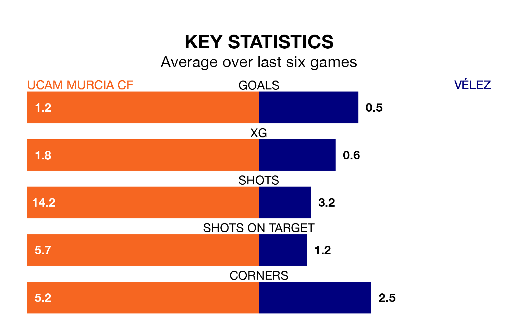

Vélez make the journey to Estadio de La Condomina to play UCAM Murcia CF on early Sunday looking to pick up points to end their seven-game losing streak.
Vélez's struggles have left them with no points from their last six Segunda División RFEF Group 4 matches, while their opponents have earned 11 from a possible 18.
Vélez are 17th in the table after 33 games, of which they have won seven and drawn 11, earning 32 points.
UCAM Murcia are eight places ahead of the away side in ninth, with 12 wins and nine draws putting them on 45 points.
With 31 goals in 33 games so far this season, Vélez are scoring at below the league average rate with 0.9 goals per game. And they are conceding more than average, letting in 52 goals at a rate of 1.6 per game.
The hosts, meanwhile, are average scorers, with 1.0 goal per game. They have also conceded 1.0 goal per game.
In the last three years, UCAM Murcia and Vélez have played each other on three occasions. UCAM Murcia won one of them and Vélez the other.
Their last meeting was on January 7, when Vélez won 3-1 at home.
UCAM Murcia's last match was on April 28, a 1-1 draw against Sevilla B, with Fernando Pina Aparicio getting the goal for UCAM Murcia.
Vélez lost 6-2 against Marbella last time out, also on April 28.
Updated: 10:44 (UTC), 30/04/24